Srisurart POS · ภาค 02เจ้าของร้าน
Part 02
เจ้าของร้าน / หลังร้าน Owner & back office
งานที่เจ้าของร้านทำครั้งแรกและทำประจำ — ตั้งรหัสผ่าน ผูกเครื่อง ตั้ง PIN ออฟไลน์ ดูแลสินค้า ใบสั่งซื้อ ลูกค้า ช่าง รายงาน สำรองข้อมูล และตรวจรายการที่ระบบส่งมาให้ตัดสินใจ
บทบาทและสิทธิ์ · Role & permission
- ใครใช้
- เจ้าของร้าน — ถือบัญชีร้าน (บทบาท
owner เป็นบทบาทเดียวในระบบ)
- ต้องมี
- รหัสผ่านชั่วคราว + รหัสผูกเครื่อง จากผู้ดูแลแพลตฟอร์ม (ภาค 03) ในวันเปิดร้าน
- เครื่อง
- งานหลังร้าน (สินค้า ใบสั่งซื้อ ช่าง ใบเสนอราคา รายงาน) ทำได้ทั้งเครื่อง POS และ Backoffice · ผูก/ปลดเครื่องต้องทำจากเครื่องที่ผูกแล้ว (มี device token)
- ทำไม่ได้
- สร้างร้านใหม่ ระงับร้าน หรือออกรหัสผ่านชั่วคราวให้ตัวเอง — เป็นงานของทีมแพลตฟอร์ม
- อ่านคู่กับ
- ภาค 01 (งานหน้าร้านทั้งหมด) — เจ้าของร้านมักขายเองด้วย
ในภาคนี้ Contents
Srisurart POS · ภาค 021 · เข้าสู่ระบบครั้งแรก
Section 1
เข้าสู่ระบบครั้งแรก · เปลี่ยนรหัสผ่าน First login
ทีมแพลตฟอร์มให้ รหัสผ่านชั่วคราว (อายุ 7 วัน) และ รหัสผูกเครื่อง ของเครื่องขายเครื่องแรก — ทั้งสองอย่างแสดงให้ทีมงานเห็นครั้งเดียว เก็บให้ดี
- เปิดแอปบนเครื่องที่จะใช้เป็นเครื่องขายกด ผูกเครื่องขาย (POS Terminal) ใต้ฟอร์มเข้าสู่ระบบ (แสดงเฉพาะเครื่องที่ยังไม่ผูก — ป้ายจะเป็น โหมด Backoffice (ยังไม่ได้ผูกเครื่อง POS))
- กรอก รหัสผูกเครื่อง (Enrolment Code) → ยืนยันผูกเครื่องผูกเครื่องสำเร็จ! เครื่องนี้ได้รับการตั้งค่าเป็น POS Terminal แล้ว — ถ้าผิดหรือหมดอายุ: รหัสผูกเครื่องไม่ถูกต้อง หรือหมดอายุแล้ว
- เข้าสู่ระบบด้วยชื่อผู้ใช้ + รหัสผ่านชั่วคราวป้ายเหนือฟอร์มจะเป็น ผูกเครื่องกับร้านแล้ว รอเข้าสู่ระบบเพื่อยืนยันสิทธิ์การใช้งาน (เครื่องผูกแล้ว แต่ระบบรู้ว่าเป็นเครื่อง POS หรือ Backoffice หลังเข้าสู่ระบบครั้งแรก · ข้อความนี้ยังเป็นร่างที่ทีมเขียน) — หลังเข้าสู่ระบบจะเป็น เครื่อง POS (มีสิทธิ์ขายและบันทึกเงินสด) ไม่ต้องผูกซ้ำหัวข้อเปลี่ยนเป็น ตั้งรหัสผ่านใหม่ และ คุณเข้าสู่ระบบด้วยรหัสผ่านชั่วคราว กรุณาตั้งรหัสผ่านของคุณเองก่อนใช้งาน
- กรอก รหัสผ่านใหม่ และ ยืนยันรหัสผ่านใหม่อย่างน้อย 12 ตัวอักษร เว้นวรรคหรือพิมพ์ภาษาไทยได้ — ห้ามซ้ำรหัสชั่วคราว ห้ามเดาง่ายหรือมีชื่อร้าน
- กด บันทึกรหัสผ่าน ภายใน 10 นาทีหน้าขายสินค้า — ถ้าช้าเกิน: หมดเวลาเปลี่ยนรหัสผ่าน กรุณาเข้าสู่ระบบใหม่ด้วยรหัสผ่านชั่วคราว
- ต่อด้วยหัวข้อ 3 (ตั้ง PIN ออฟไลน์) และตั้งค่าร้าน (หัวข้อ 8)
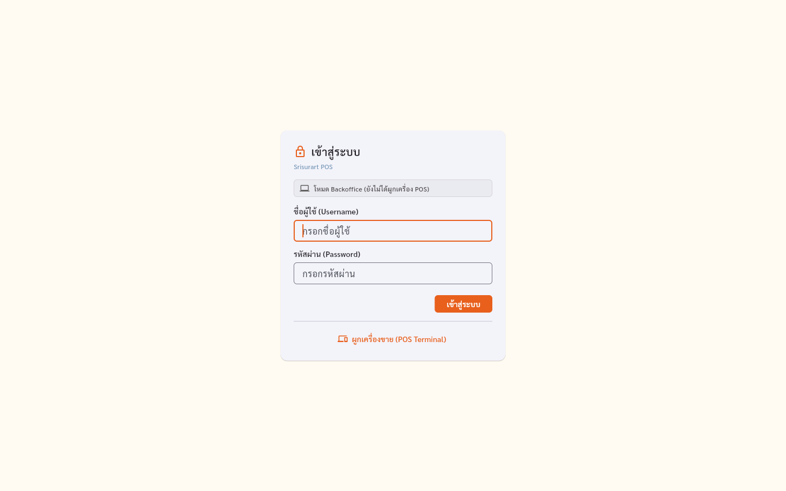
เครื่องที่ยังไม่ผูก — ลิงก์ ผูกเครื่องขาย (POS Terminal) ใต้ฟอร์ม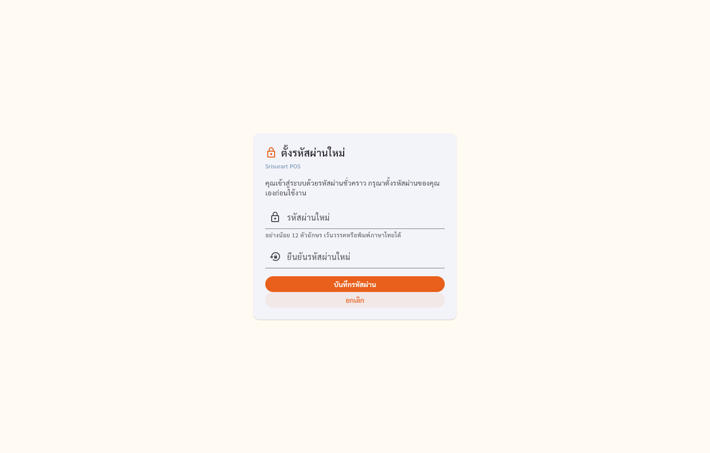
ฟอร์มตั้งรหัสผ่านใหม่ (บังคับครั้งแรก)
| ข้อความ | ทำอย่างไร |
|---|
| รหัสผ่านชั่วคราวหมดอายุแล้ว กรุณาติดต่อทีมงานเพื่อขอรหัสใหม่ | ให้ทีมแพลตฟอร์มออกรหัสใหม่ (ภาค 03) |
| ปุ่ม บันทึกรหัสผ่าน กดไม่ได้ — ยังมีข้อในรายการตรวจที่ไม่ขึ้นเครื่องหมายถูก (อย่างน้อย 12 ตัวอักษร / รหัสผ่านทั้งสองช่องตรงกัน) | กรอกจนทุกข้อขึ้นเครื่องหมายถูก กดรูปตาเพื่อดูสิ่งที่พิมพ์ได้ |
| รหัสผ่านถูกเปลี่ยนเมื่อ {วันเวลา} ถ้าไม่ใช่คุณ กรุณาติดต่อทีมงานทันที (แถบบนทุกหน้า 7 วัน) | ถ้าคุณเปลี่ยนเอง กด รับทราบ — ถ้าไม่ใช่ ติดต่อทีมงานทันที |
ลืมรหัสผ่านไม่มีปุ่ม "ลืมรหัสผ่าน" ในแอป — โทรหาทีมงาน ทีมงานจะ โทรกลับ ไปที่เบอร์ที่ร้านให้ไว้ก่อนออกรหัสชั่วคราวใหม่ (อายุ 24 ชม.) รหัสเดิมจะใช้ไม่ได้ทันที
ข้อความในฟอร์มเปลี่ยนรหัสผ่าน (#443) ยังเป็นร่างที่ทีมเขียน รอเจ้าของโปรเจกต์รับรอง — ถ้อยคำอาจเปลี่ยน
Srisurart POS · ภาค 022 · ผูกเครื่อง
Section 2
ผูกเครื่อง · ปลดเครื่อง Device management
เข้าหน้า จัดการเครื่อง (Device Management) จาก ตั้งค่า → แท็บ 🔐 บัญชี / ผูกเครื่อง → เปิดหน้าจัดการเครื่อง (ไม่มีในเมนูหลัก)
กติกาการใช้งานเครื่อง (ตามที่หน้าจอแสดง)เครื่องขาย POS อนุญาตให้มีได้ 1 เครื่องต่อร้านค้า · หากต้องการเปลี่ยนเครื่องขาย ให้ปลดระวาง (Retire) เครื่องเดิมก่อน · กรณีเครื่องล้างเบราว์เซอร์หรือ IndexedDB หาย จะต้องออกรหัสผูกเครื่องใหม่ และจะได้รับเลขเครื่อง (#No) ใหม่เสมอ (กฎ F8)
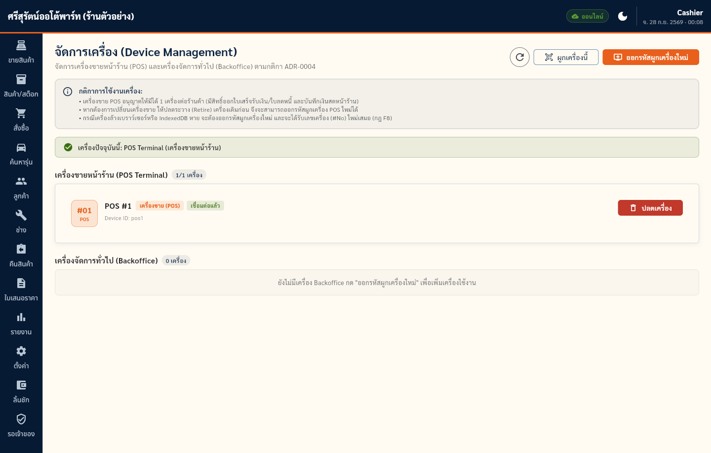
จัดการเครื่อง — แยก POS / Backoffice / ปลดระวางแล้ว
เพิ่มเครื่อง (ออกรหัสผูกเครื่อง) Enrol
- กด ออกรหัสผูกเครื่องใหม่เลือก เครื่องขาย (POS) หรือ Backoffice แล้วตั้ง ชื่อเรียกเครื่อง (Device Label)
- ยืนยันหน้าต่าง รหัสผูกเครื่องของคุณ — รหัส 8 ตัวอักษร (0–9, A–F) มีปุ่มคัดลอก และ นำรหัส 8 ตัวอักษรนี้ไปกรอกที่หน้าผูกเครื่องของเบราว์เซอร์เป้าหมาย รหัสนี้มีอายุ 15 นาที — กรอกให้ครบทั้ง 8 ตัว (ข้อความนี้แก้ใน #462 ยังเป็นร่างที่ทีมเขียน)
- ที่เครื่องเป้าหมาย: หน้าเข้าสู่ระบบ → ผูกเครื่องขาย (POS Terminal) → กรอกรหัส → ยืนยันผูกเครื่อง(ประเภทเครื่องติดมากับรหัสแล้ว) · ถ้าเครื่องนั้นยังมีงานค้าง ระบบปฏิเสธก่อนใช้รหัส (รหัสยังใช้ได้): ผูกเครื่องใหม่ไม่ได้ เพราะเครื่องนี้ยังมีงานค้างอยู่ (รายการค้างส่ง ชำระเครดิตค้างส่ง หรือบิลพัก) กรุณาส่งหรือยกเลิกรายการให้เรียบร้อยก่อน
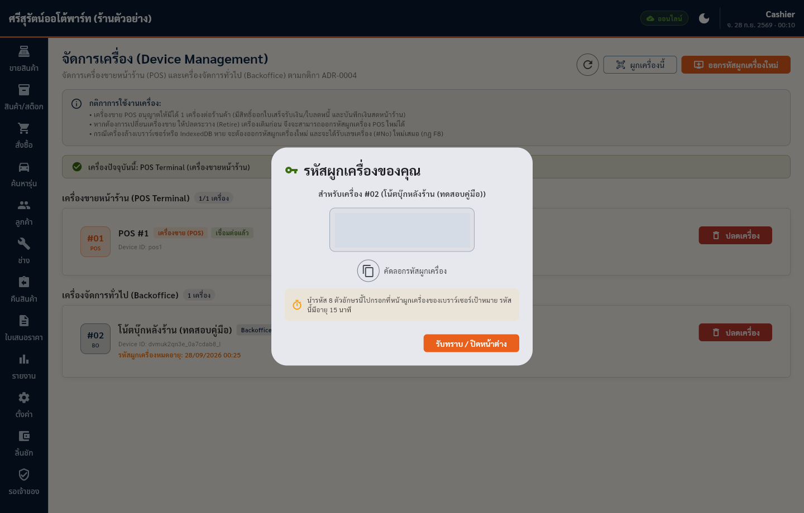
หน้าต่าง รหัสผูกเครื่องของคุณ (ในภาพปิดรหัสไว้) — "นำรหัส 8 ตัวอักษรนี้ไป… รหัสนี้มีอายุ 15 นาที" · ด้านหลังเห็นเครื่องใหม่สถานะ รอผูกเครื่อง
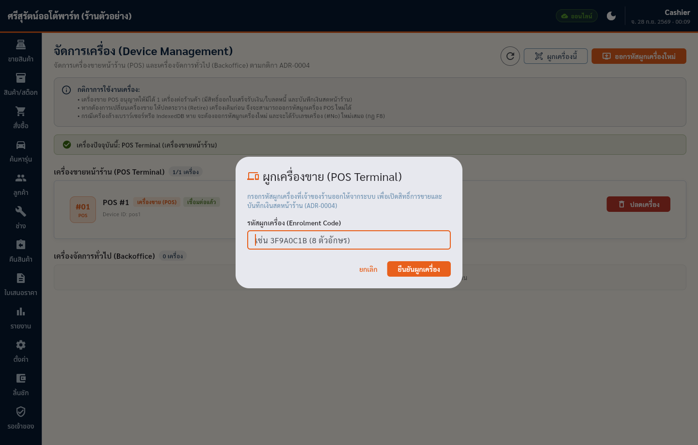
ผูกเครื่องขาย (POS Terminal) — กรอกรหัส 8 ตัวบนเครื่องเป้าหมาย (ตัวอย่างในช่อง "เช่น 3F9A0C1B (8 ตัวอักษร)")
ถ้ามีเครื่องขายอยู่แล้วจะขึ้น ร้านมีเครื่องขายอยู่แล้ว 1 เครื่อง กรุณาปลดเครื่องขายเดิมก่อนเพิ่มเครื่องใหม่
ปลดเครื่อง (ย้าย/เปลี่ยนเครื่องขาย) Retire
- กด ปลดเครื่อง ที่การ์ดเครื่องคุณแน่ใจหรือไม่ว่าต้องการปลดระวางเครื่อง "{label}"?
- ถ้าเป็นเครื่อง POS ที่ยังมีกะเปิดนับเงินแล้วกรอก ยอดเงินสดนับจริงในลิ้นชัก (บาท)
- ถ้าการ์ดขึ้น มีรายการขายค้างส่ง {N} รายการดีที่สุดคือให้เครื่องนั้นต่อเน็ตส่งให้หมดก่อน · ถ้าเครื่องเสียจริง ติ๊ก ยืนยันบังคับปลดเครื่องแม้มีรายการค้าง และใส่ เหตุผลในการบังคับปลดเครื่อง (จำเป็น)
- ยืนยันปลดระวางเครื่อง #{NN} ({label}) เรียบร้อยแล้ว — แล้วออกรหัสใหม่ให้เครื่องใหม่ได้
ยกเลิกการผูกเครื่องที่ใช้อยู่ Unenrol this browser
ใช้เมื่อจะเลิกใช้ เครื่องนี้ (เช่น คืนโน้ตบุ๊ก) — ต่างจาก "ปลดเครื่อง" ที่ทำกับเครื่องใดก็ได้จากรายการ
- ตั้งค่า → 🔐 บัญชี / ผูกเครื่อง → ยกเลิกการผูกเครื่องยืนยันยกเลิกการผูกเครื่อง — หากยกเลิกการผูกเครื่องนี้ สิทธิ์ของเครื่อง POS จะถูกถอนออก และต้องให้เจ้าของร้านออกรหัสผูกเครื่องใหม่หากต้องการเชื่อมต่ออีกครั้ง
- กด ยืนยันถอนการผูกเครื่องระบบลบ device token และ PIN ออฟไลน์ออกจากเบราว์เซอร์นี้ แล้วกลับไปหน้าเข้าสู่ระบบ — เซิร์ฟเวอร์ยังนับเครื่องนี้อยู่ ต้องไป ปลดเครื่อง ในหน้าจัดการเครื่องจากเครื่องอื่นที่ผูกไว้ ไม่เช่นนั้นจะออกรหัสเครื่อง POS ใหม่ไม่ได้
ก่อนยกเลิกการผูกเครื่อง
- ต้องไม่มีรายการค้างส่ง (ป้ายมุมบนเป็น ออนไลน์ ไม่มีตัวเลข) — รายการที่ยังไม่ส่งอยู่ในเครื่องนี้เครื่องเดียว
- ต้องมีเครื่องอื่นที่ผูกไว้อยู่แล้วอย่างน้อย 1 เครื่อง — หน้าจัดการเครื่องใช้ได้เฉพาะจากเครื่องที่ผูกแล้ว ถ้ายกเลิกเครื่องสุดท้าย (หรือล้างข้อมูลเบราว์เซอร์ของเครื่องสุดท้าย) ร้านจะออกรหัสผูกเครื่องหรือปลดเครื่องเองไม่ได้อีก และทีมแพลตฟอร์มออกรหัสใหม่ให้ได้เฉพาะเครื่องที่ไม่เคยผูก (ภาค 03) — ต้องติดต่อทีมพัฒนา
บังคับปลดเครื่องรายการที่ค้างในเครื่องเก่าอาจไม่เคยถึงเซิร์ฟเวอร์ — ระบบจะบันทึกเป็นรายการตรวจ ปลดเครื่องที่ค้างส่ง ในหน้า รอเจ้าของ
Srisurart POS · ภาค 023 · PIN ออฟไลน์
Section 3
ตั้ง PIN ออฟไลน์ Offline PIN (08 §13)
PIN ออฟไลน์ช่วยให้แคชเชียร์ขายของหน้าร้านได้ต่อเนื่องเมื่ออินเทอร์เน็ตหลุด โดยมีอายุ 3 วันนับจากที่ล็อกอินออนไลน์ครั้งล่าสุด และต้องไม่ตรงกับรหัสผ่านหลักของร้าน
- ทำบน เครื่อง POS ขณะออนไลน์เครื่องอื่นจะเห็น ฟังก์ชัน PIN ออฟไลน์ใช้ได้เฉพาะเครื่องที่ผูกเป็นเครื่อง POS เท่านั้น
- ตั้งค่า → 🔐 บัญชี / ผูกเครื่อง → ส่วน PIN ออฟไลน์ → ตั้งค่า PIN (หรือ เปลี่ยน PIN)หน้าต่าง ตั้งค่ารหัส PIN ออฟไลน์
- กรอก 3 ช่องรหัสผ่านบัญชีร้านปัจจุบัน (Password) · รหัส PIN ออฟไลน์ใหม่ (4-6 หลัก) · ยืนยันรหัส PIN ออฟไลน์ใหม่อีกครั้ง
- บันทึกบันทึกรหัส PIN ออฟไลน์เรียบร้อยแล้ว และสถานะ ตั้งค่า PIN แล้ว (พร้อมใช้งานออฟไลน์)
| ข้อความ | สาเหตุ |
|---|
| รหัส PIN ต้องไม่ตรงกับรหัสผ่านของบัญชี | PIN เหมือนรหัสผ่าน |
| รหัส PIN ต้องเป็นตัวเลข 4-6 หลัก / รหัส PIN และการยืนยันไม่ตรงกัน | รูปแบบไม่ถูก |
| รหัสผ่านบัญชีไม่ถูกต้อง | รหัสผ่านร้านผิด |
| ต้องเปลี่ยนรหัสผ่านชั่วคราวก่อน จึงจะตั้งรหัส PIN ได้ | ยังไม่ได้ทำหัวข้อ 1 |
| รหัส PIN ถูกล็อก (ใส่ผิดครบ 5 ครั้ง) | กดตั้งค่าใหม่เพื่อปลดล็อก |
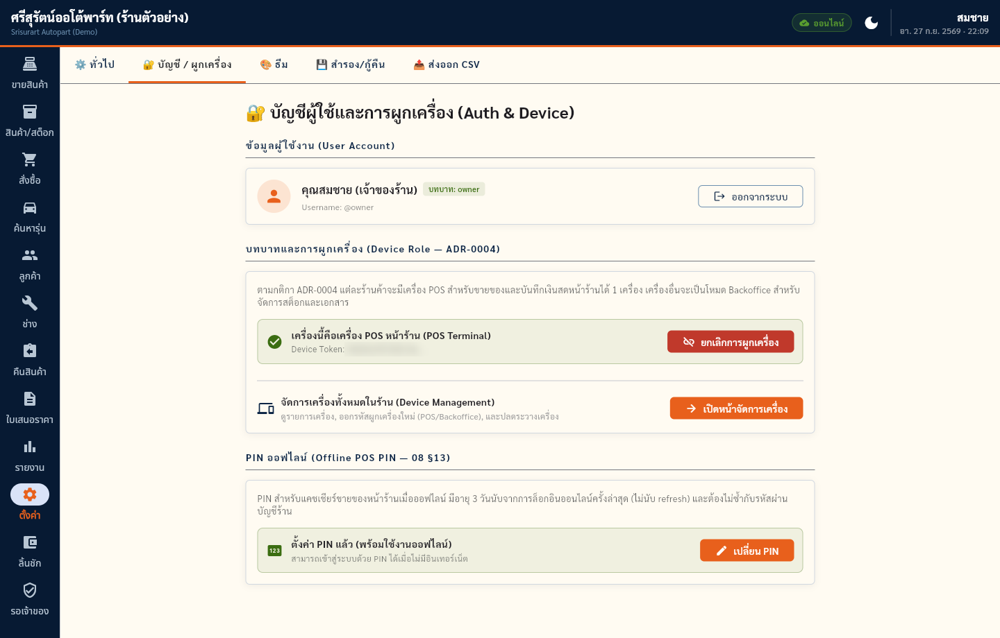
แท็บ 🔐 บัญชี / ผูกเครื่อง — สถานะเครื่อง POS และส่วน PIN ออฟไลน์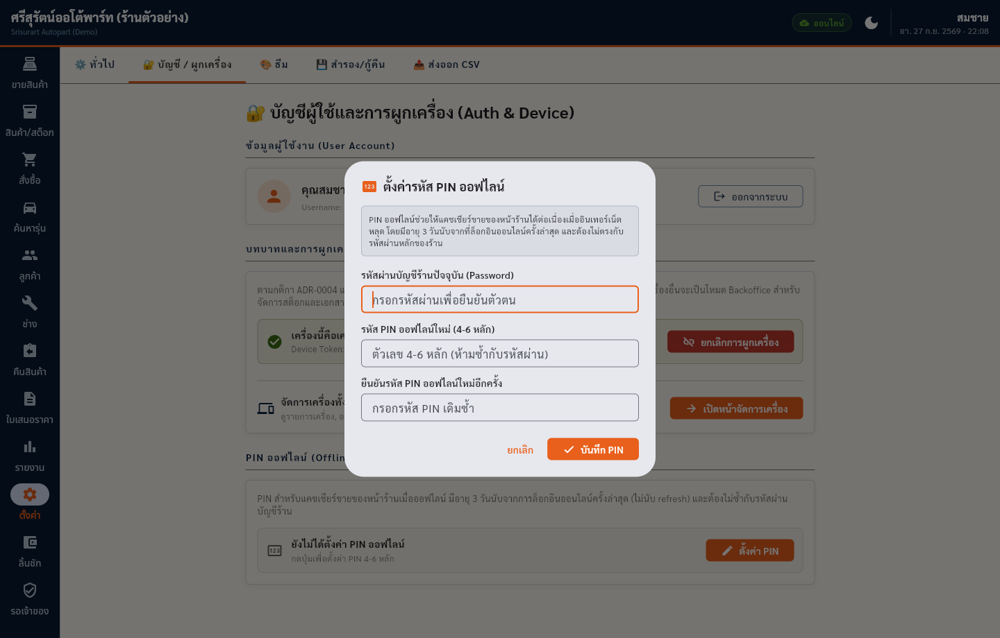
หน้าต่าง ตั้งค่ารหัส PIN ออฟไลน์ความปลอดภัยPIN ไม่ถูกส่งออกจากเครื่อง ระบบเก็บเฉพาะค่าแฮชไว้ในเครื่อง POS — ช่วง 3 วันตรวจที่เครื่องเท่านั้น รายการที่ขายตอนออฟไลน์จะถูกตรวจซ้ำที่เซิร์ฟเวอร์ตอนส่งขึ้น
Srisurart POS · ภาค 024 · สินค้า
Section 4
สินค้า · สต็อก · หมวด · ป้ายราคา Products
เมนู สินค้า/สต็อก มี 4 แท็บ: สต็อก · Stock คำนวณราคา · Price Calc ซัพพลายเออร์ · Suppliers รายงานสต็อก · Reports — ทุกงานแก้ไขต้องออนไลน์
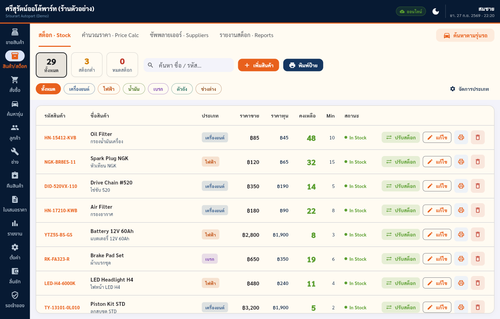
สินค้า/สต็อก — แท็บ สต็อก
เพิ่มสินค้า Add
- กด เพิ่มสินค้าหน้าต่าง เพิ่มสินค้าใหม่
- กรอกรหัสสินค้า ชื่อ (EN/TH) แบรนด์ ประเภท รุ่นรถที่ใช้ สต็อก สต็อกขั้นต่ำกล่องคำนวณราคาในหน้าต่างบอก กำไรดี ✓ / พอได้ / ต่ำเกิน ⚠
- บันทึกรหัสซ้ำ (ไม่สนตัวพิมพ์เล็ก-ใหญ่) จะขึ้น รหัส "{partNo}" มีอยู่แล้วในระบบ
แก้ไขสินค้ารหัสสินค้าแก้ไม่ได้ (รหัสไม่สามารถแก้ไขได้ (ผูกกับประวัติการขาย)) และสต็อกแก้ในหน้าต่างนี้ไม่ได้ — ใช้ ปรับสต็อก
ปรับสต็อก Adjust stock
- แถวสินค้า → ปรับสต็อก
- กรอก จำนวนที่ปรับ (+ เพิ่ม / - ลด) เช่น
+10 หรือ -3 และ หมายเหตุสต็อกหลังปรับ — ลดต่ำกว่า 0 ไม่ได้ ระบบหยุดที่ 0 และบันทึกประวัติทุกครั้ง
- กด บันทึกประวัติอยู่ที่แท็บ รายงานสต็อก · Reports → ประวัติสต็อก
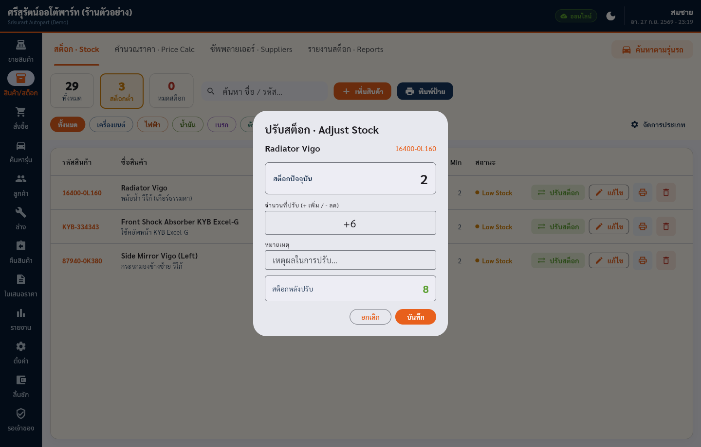
ปรับสต็อก — กรอก +6 แล้วเห็น "สต็อกหลังปรับ" 8 ก่อนกด บันทึก
ลบสินค้าหลายรายการ Bulk delete
- แท็บ สต็อก · Stock → กรองให้เหลือรายการที่จะลบ → ปุ่ม เลือกเพื่อลบ (ข้าง พิมพ์ป้าย)ทุกแถวมีช่องติ๊ก และแถบ เลือกแล้ว {n} รายการ
- ติ๊กทีละแถว หรือ เลือกทั้งหมด (ที่กรองอยู่ {N})ล้างที่เลือก = เอาติ๊กออกทั้งหมด · ยกเลิกการเลือก = ออกจากโหมดเลือก
- กด ลบที่เลือก ({n})หน้าต่าง ลบสินค้า {n} รายการ แสดงชื่อ รหัส และสต็อกของทุกรายการ พร้อมคำเตือน:
- ⚠ มี {n} รายการที่ยังมีสต็อกคงเหลือ รวม {x} ชิ้น — สต็อกนี้จะหายจากคลังด้วย
- ⚠ มี {n} รายการที่อยู่ในใบสั่งซื้อที่ยังไม่รับของ ใบเสนอราคาที่ยังไม่หมดอายุ หรือบิลที่พักในเครื่องนี้ — ยังลบได้ แต่เอกสารเหล่านั้นจะอ้างถึงสินค้าที่ถูกลบ (บอกเลขเอกสารที่เกี่ยวข้อง)
- สินค้าที่มีรายการขาย/คืนยังไม่ได้ส่งขึ้นเซิร์ฟเวอร์ลบไม่ได้: ลบไม่ได้ {n} รายการ: มีรายการขาย/คืนที่ยังไม่ได้ส่งขึ้นเซิร์ฟเวอร์ — ซิงก์ให้เสร็จก่อนลบ (ถ้าลบไม่ได้ทุกรายการ หัวหน้าต่างเป็น ลบสินค้าไม่ได้)
- เลือกเกิน 5 รายการ หรือมีรายการที่ยังมีสต็อก: พิมพ์จำนวนในช่อง พิมพ์ {n} เพื่อยืนยันปุ่ม ยกเลิก ถูกเลือกไว้ก่อนเสมอ
- กด ลบ {n} รายการสำเร็จทั้งหมด: ลบแล้ว {n} รายการ · มีที่ไม่สำเร็จ: หน้าต่าง ผลการลบสินค้า บอกเหตุผลรายตัว รายการที่ยังอยู่ยังติ๊กค้างไว้ให้ลองใหม่
รู้ไว้ทำได้ทุกเครื่อง (ทั้งเครื่อง POS และ Backoffice) · API build ต้องออนไลน์ (ตอนออฟไลน์ปุ่มกดไม่ได้) และเซิร์ฟเวอร์ลบแบบ soft delete ทีละรายการ · ระหว่างลบ ปุ่มแก้ไข/ปรับสต็อก/เพิ่มสินค้า/จัดการประเภทกดไม่ได้ · ประวัติการขายยังอยู่ แต่ไม่มีปุ่มกู้คืนในแอป
งานอื่นในหน้านี้ Other
- แก้ไข / ลบสินค้า: แก้ไข ที่แถว · ไอคอนถังขยะ = ลบ ลบสินค้า "{name}" ({partNo}) ? การลบจะไม่สามารถกู้คืนได้ — ประวัติการขายยังอยู่ · ใช้กฎเดียวกับการลบหลายรายการ (สินค้าที่มีรายการค้างส่งลบไม่ได้ เหตุผลขึ้นแถบล่างจอ)
- กรอง: การ์ด ทั้งหมด / สต็อกต่ำ / หมดสต็อก · ช่อง ค้นหา ชื่อ / รหัส… · ชิปหมวด
- ค้นหาตามรุ่นรถ: ปุ่ม ค้นหาตามรุ่นรถ มุมขวาบน — ขั้นตอนอยู่ใน ภาค 01 หัวข้อ 3.1
- หมวด · ซัพพลายเออร์ · ป้ายราคา · คำนวณราคา · รายงานสต็อก: หัวข้อ 4.1
Srisurart POS · ภาค 024.1 · หมวด · ซัพฯ · ป้ายราคา
Section 4.1
หมวด · ซัพพลายเออร์ · ป้ายราคา · รายงานสต็อก Catalogue tools
งานในหน้า สินค้า/สต็อก ที่ไม่ได้ทำทุกวัน — ทุกงานที่แก้ข้อมูล ต้องออนไลน์ (ตอนออฟไลน์ขึ้น ระบบอยู่ในสถานะออฟไลน์ ไม่สามารถดำเนินการเกี่ยวกับสินค้าได้)
หมวดสินค้า Categories
- แท็บ สต็อก · Stock → จัดการประเภท (ขวา แถวชิปหมวด)แถบ จัดการประเภท: แสดงหมวดทั้งหมดพร้อม ✕
- เพิ่ม: พิมพ์ในช่อง ประเภทใหม่… → + เพิ่ม
- ลบ: กด ✕ ที่ชิปลบประเภท "{name}"?
- กด จัดการประเภท อีกครั้งเพื่อปิดแถบ
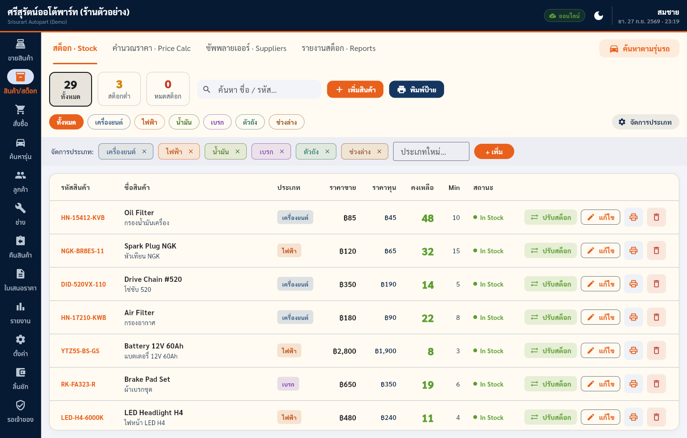
แถบ จัดการประเภท — ร้านใหม่ได้ 5 หมวดเริ่มต้นตอนสร้างร้าน (ในภาพเพิ่ม "ช่วงล่าง" แล้ว)
ซัพพลายเออร์และราคาทุน Suppliers
- แท็บ ซัพพลายเออร์ · Suppliers → แตะสินค้าในรายการซ้ายใต้ชื่อบอกจำนวน "ซัพฯ" ที่บันทึกไว้
- กด เพิ่มซัพฯ → กรอก ชื่อซัพพลายเออร์ · ราคาต่อชิ้น ฿ · ค่าส่ง ฿แถวใหม่ในตาราง — แถวที่ "รวม" (ทุน + ค่าส่ง) ถูกที่สุดได้ป้าย ✓ ราคาถูกสุด (เท่ากันได้ทั้งคู่)
- ลบ: ไอคอนถังขยะที่แถวไม่มีถามยืนยัน — กดแล้วหายทันที
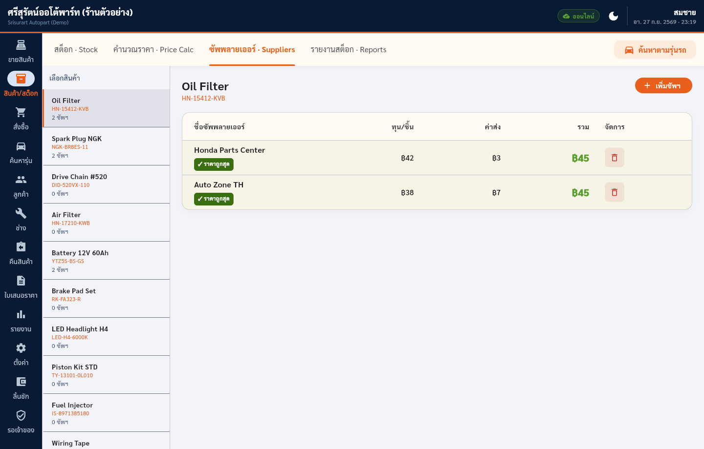
ซัพพลายเออร์ — สองร้านรวม ฿45 เท่ากัน จึงได้ป้าย ✓ ราคาถูกสุด ทั้งคู่
ราคาซัพฯ ถูกสุดไปโผล่ในไฟล์ 🗂 สต็อกปัจจุบัน (ตั้งค่า → ส่งออก CSV) · ราคาทุนของสินค้าจริงเปลี่ยนตอนรับของจากใบสั่งซื้อ (หัวข้อ 5) ไม่ใช่จากตารางนี้
พิมพ์ป้ายราคาติดชั้น Shelf labels
- แท็บ สต็อก · Stock → กรองรายการที่ต้องการก่อน (เช่น การ์ด สต็อกต่ำ) → ปุ่ม พิมพ์ป้าย ด้านบนหรือไอคอนเครื่องพิมพ์ที่แถวสินค้าเพื่อพิมพ์ตัวเดียว🏷 พิมพ์ป้ายราคา · Print Shelf Labels — สินค้าที่กรองไว้ถูกเลือกให้แล้ว
- ปรับรายการติ๊กสินค้าในรายการซ้าย หรือชิป เลือกทั้งหมด · ล้าง · ⚠ สต็อกต่ำ
- ตั้ง จำนวนสำเนา / ป้าย ด้วย − / +ใช้กับทุกสินค้าที่เลือกด้านล่างบอก {n} สินค้า × {copies} ชุด = {total} ป้าย และด้านขวาแสดง ตัวอย่างป้าย · Preview
- กด พิมพ์ป้ายราคา→ หน้าต่างพิมพ์ของเครื่อง เลือกเครื่องพิมพ์ป้ายความร้อน 58 มม. (ระบบไม่ได้สั่งเครื่องพิมพ์ตรง)
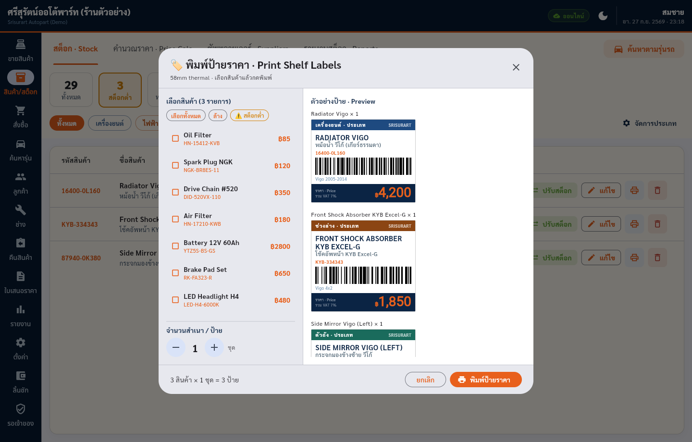
พิมพ์ป้ายราคา — ป้ายมีหมวด ชื่อ รหัส บาร์โค้ด Code128 รุ่นรถ และราคา "รวม VAT 7%"
ข้อความ รวม VAT {N}% บนป้ายอ่านค่าจากช่อง VAT (%) ในหน้าตั้งค่าจริง (แก้ 2026-09-28, #480) — เปลี่ยนเลข VAT ในหน้าตั้งค่าแล้วป้าย/ตัวอย่างป้าย/แท็บคำนวณราคาจะตามเลขนั้นทันที ไม่ใช่ค่าตายตัว 7% อีกต่อไป
คำนวณราคา · รายงานสต็อก Price calc & stock reports
- คำนวณราคา · Price Calc — กรอก ราคาทุน / ค่าขนส่ง / ราคาขายลูกค้าทั่วไป / ราคาขายช่าง แล้วดูกำไรและ Margin % ของสองราคา (ไม่บันทึกอะไร) · ป้าย กำไรดี ✓ (Margin ≥ 30%) / พอได้ (≥ 15%) / ต่ำเกิน ⚠
- รายงานสต็อก · Reports มี 4 แท็บย่อย: ยอดวันนี้ · กำไรเดือนนี้ · ประวัติสต็อก (ทุกการขาย/รับของ/ปรับสต็อก) · สินค้าดี/แย่ (ขายดี 5 อันดับ / ขายช้า 5 อันดับ)
Srisurart POS · ภาค 025 · ใบสั่งซื้อ
Section 5
ใบสั่งซื้อ · รับของเข้าสต็อก Purchase orders
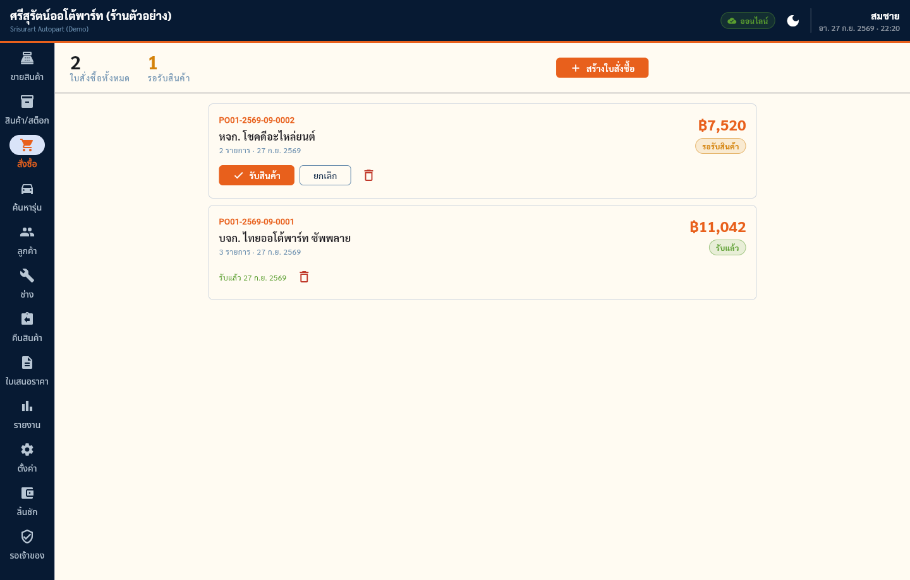
สั่งซื้อ — สถานะ รอรับสินค้า / รับแล้ว / ยกเลิก
สร้างใบสั่งซื้อ Create
- เมนู สั่งซื้อ → สร้างใบสั่งซื้อสร้างใบสั่งซื้อใหม่ · New Purchase Order
- กรอก ซัพพลายเออร์ · Supplier
- ค้นสินค้าในช่อง เพิ่มสินค้า · Add Items แล้วแตะเพื่อเพิ่มแก้จำนวนและราคาทุนได้ · แตะสินค้าเดิมซ้ำ = เพิ่มจำนวน
- กด บันทึกใบสั่งซื้อ(กดได้เมื่อมีซัพพลายเออร์และสินค้าอย่างน้อย 1 รายการ)การ์ดสถานะ รอรับสินค้า
ทางลัดจากหน้าขายครั้งแรกที่เปิดหน้าขายในแต่ละรอบการใช้แอป (รีโหลดหน้าแล้วจะขึ้นอีก) ถ้ามีสินค้าหมด/ต่ำกว่าขั้นต่ำ หน้าขายจะเด้ง แจ้งเตือนสต็อก · Stock Alert — มีปุ่ม 🛒 ไปหน้าสั่งซื้อ และ 🖨 พิมพ์ใบสั่งซื้อ
รับของ Receive
- ตรวจของจริงกับใบสั่งซื้อ
- กด รับสินค้ายืนยันรับสินค้าเข้าสต็อก? (ต้นทุนสินค้าจะถูกอัปเดตตามราคาในใบสั่งซื้อ)
- ยืนยันสต็อกเพิ่ม ต้นทุนใหม่ = ถัวเฉลี่ยถ่วงน้ำหนัก (ของเก่า × ทุนเก่า + ของใหม่ × ทุนใหม่) ÷ จำนวนรวม — ประวัติสต็อกบันทึก PO {poNo} จาก {supplier} · ทุนใหม่ ฿{wac}
รหัสไม่ตรงกับในระบบถ้าขึ้น ⚠ รับสินค้าแล้ว แต่ไม่พบรหัสสินค้าต่อไปนี้ในระบบ (สต็อกไม่ถูกอัปเดต): ให้เพิ่มสินค้านั้นแล้วปรับสต็อกเอง
- ยกเลิก = เปลี่ยนสถานะเป็น "ยกเลิก" ไม่ลบข้อมูล · ลบถาวร = ลบจริง กู้คืนไม่ได้
Srisurart POS · ภาค 026 · ลูกค้า · ช่าง
Section 6
ลูกค้า · ช่าง · รับชำระเครดิต Customers & mechanics
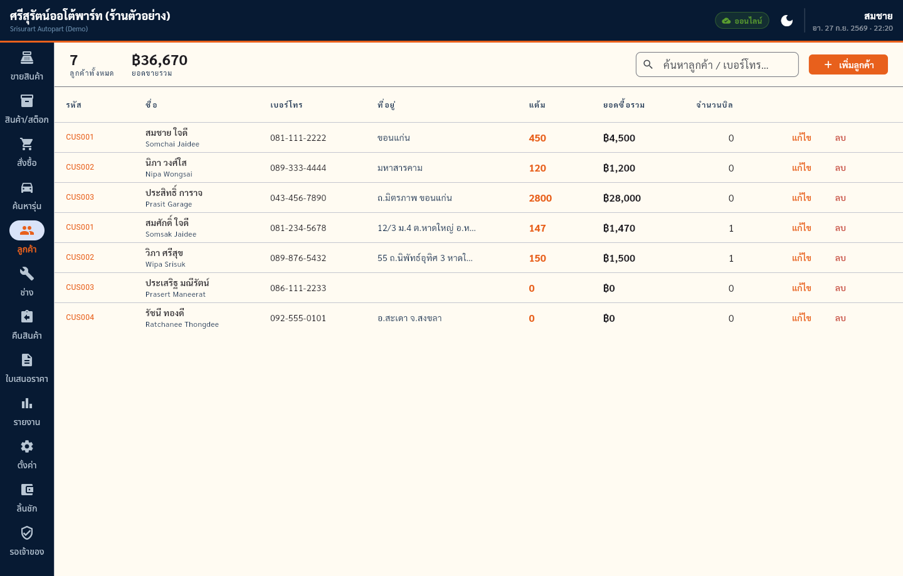
ลูกค้า — รหัส CUS### แต้ม ยอดซื้อรวม (ข้อมูลตัวอย่าง dev: รหัสซ้ำเพราะ seed ของ Drift ปนกับข้อมูลเซิร์ฟเวอร์ ไม่ใช่บั๊ก)
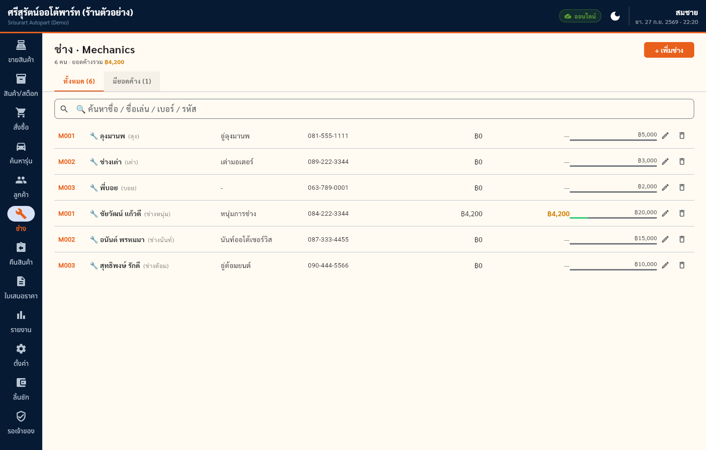
ช่าง · Mechanics — ยอดค้าง วงเงิน แถบความคืบหน้า
ลูกค้า Customers
- เพิ่มลูกค้า → ชื่อ (TH/EN อย่างน้อยหนึ่งช่อง) เบอร์ ที่อยู่ — รหัส
CUS### ออกให้เอง
- แต้มและยอดซื้อ แก้เองไม่ได้ เปลี่ยนตามการขาย/คืนเท่านั้น
- ลบลูกค้าต้องออนไลน์ — ประวัติการขายยังอยู่ แต่ไม่มีชื่อลูกค้าผูก
ช่าง Mechanics
- + เพิ่มช่าง → ชื่อ-สกุล (ภาษาไทย) * ชื่อเล่น เบอร์ อู่ และ วงเงินเครดิต (บาท) — 0 = ไม่ให้เครดิต — รหัส
M### ออกให้เอง
- แท็บ มียอดค้าง ({n}) ดูเฉพาะช่างที่ค้าง · หัวหน้าบอก ⚠ เกินวงเงิน {n} คน
รับชำระเครดิตช่าง Credit payment
- ต้องเปิดกะอยู่ (ทำบนเครื่อง POS)
- เลือกช่าง → 💵 รับชำระ💵 รับชำระเครดิต — {nameTH} พร้อม ยอดค้างปัจจุบัน
- กรอก จำนวนเงินที่รับ *หรือปุ่มลัด +฿100 … เต็มจำนวน แล้วเลือก เงินสด / โอน/QR
- กด ✓ บันทึกการรับเงินรับชำระ {baht} เรียบร้อย — ถ้าเกินยอดค้างจะถาม ยืนยันรับเงิน ก่อน
เน็ตหลุดตอนรับชำระระบบเก็บไว้ในเครื่อง: บันทึกการรับชำระไว้ในเครื่องแล้ว — ยังส่งเข้าระบบไม่ได้ จะส่งให้อัตโนมัติ (ยอดค้างจะลดเมื่อส่งสำเร็จ) ไม่ต้องกดรับชำระซ้ำ ดูสถานะได้จากแถบ ⏳ รับชำระรอส่งเข้าระบบ {n} รายการ ({baht}) → ดูรายการ ›
รับชำระที่ยังไม่เข้าระบบ (API build)
- หน้า ช่าง → แถบบนสุด ⏳ รับชำระรอส่งเข้าระบบ {n} รายการ ({baht}) และ/หรือ ❌ ระบบปฏิเสธ {n} รายการ — ต้องตรวจสอบ → ดูรายการ ›หน้าต่าง รับชำระที่ยังไม่เข้าระบบ — แต่ละแถวบอกช่าง ยอด วิธีชำระ และ ⏳ รอส่ง · รับเมื่อ {datetime} หรือเหตุผลที่ถูกปฏิเสธ
- กด ส่งตอนนี้ เมื่อเน็ตกลับส่งทุกรายการที่รอ (ปกติระบบส่งเองอยู่แล้ว)
- แถวที่ถูกปฏิเสธเพราะจ่ายเกินยอดค้างกด ส่งอีกครั้ง (ยืนยันจ่ายเกิน) ถ้าตั้งใจรับเกินจริง
- แถวที่ต้องทิ้งลบรายการ → ระบบไม่ได้บันทึกรายการนี้ ลบออกจากเครื่อง? (ถ้ารับเงินไปแล้ว ต้องจัดการคืนเงินหรือบันทึกใหม่เอง)
ใน Drift build การรับชำระไม่ถามยืนยันเมื่อเกินยอดค้าง — ยอดค้างจะถูกหยุดที่ 0
แก้ไข / ลบ ลูกค้าและช่าง
- แก้ไข ที่แถว → แก้ชื่อ เบอร์ ที่อยู่ (ลูกค้า) หรือชื่อ อู่ วงเงิน หมายเหตุ (ช่าง) — แต้ม ยอดซื้อ และยอดค้างแก้ไม่ได้
- ลบ → ลูกค้าที่มีบิลจะขึ้น ลูกค้ารายนี้มี {n} บิล (ประวัติการขายจะยังคงอยู่ แต่ไม่มีชื่อลูกค้าผูก) · ช่าง: ลบช่าง "{nameTH}"? — ลบต้องออนไลน์ทั้งคู่
- เพิ่ม/แก้ลูกค้าตอนออฟไลน์ได้ (เข้าคิวรอส่ง) · เพิ่ม/แก้ช่างต้องออนไลน์ (ระบบอยู่ในสถานะออฟไลน์ ไม่สามารถดำเนินการจัดการช่างได้)
Srisurart POS · ภาค 027 · รายงาน
Section 7
รายงาน · สรุปยอดปิดร้าน Reports
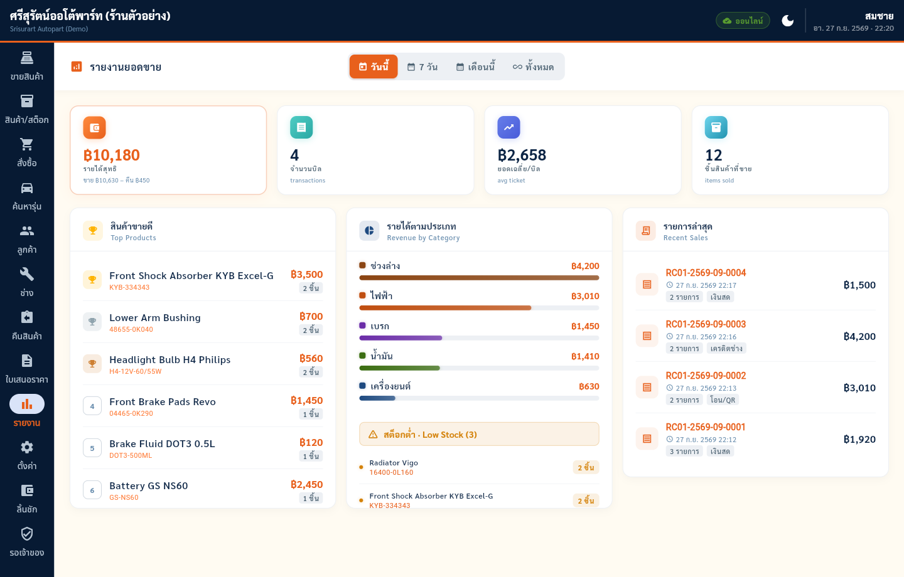
รายงานยอดขาย
- เมนู รายงาน → เลือกช่วงวันนี้ 7 วัน เดือนนี้ ทั้งหมด
- อ่านตัวเลขหลัก 4 ช่องรายได้สุทธิ (ขาย − คืน) · จำนวนบิล · ยอดเฉลี่ย/บิล · ชิ้นสินค้าที่ขาย
- ดู สินค้าขายดี · รายได้ตามประเภท · สต็อกต่ำ · Low Stock · รายการล่าสุด
- กำไร: สินค้า/สต็อก → รายงานสต็อก · Reports → กำไรเดือนนี้ — คิดจากต้นทุน ณ วันที่ขาย ถ้าไม่มีจะบอก {n} รายการคำนวณจากต้นทุนปัจจุบัน ไม่ใช่ ณ วันที่ขาย
- ประวัติสต็อก / สินค้าดี-แย่: แท็บย่อยในหน้าเดียวกัน
- สรุปยอดปิดร้าน: หน้า ลิ้นชัก → 📊 สรุปยอดปิดร้าน — รายได้ วิธีชำระ (เงินสด · โอน/QR · เครดิตช่าง) สินค้าขายดีวันนี้ ตรวจนับเงินของกะที่เปิดอยู่ และพิมพ์รายงาน 80 มม. มีช่องลายมือชื่อ (ภาค 01 หัวข้อ 7)
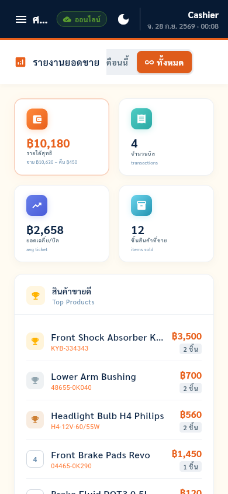
บนมือถือ — การ์ดตัวเลขหลักเรียง 2×2 (ช่วง ทั้งหมด) · ปุ่มช่วงเวลาเลื่อนซ้าย-ขวาได้
อ่านตัวเลขให้ถูกช่วง 7 วัน ไม่มีเพดานวันสิ้นสุด — ถ้ามีบิลวันที่ในอนาคต (เช่น นาฬิกาเครื่องผิด) จะถูกนับด้วย
Srisurart POS · ภาค 028 · ตั้งค่า
Section 8
ตั้งค่า · ธีม · สำรอง/กู้คืน · ส่งออก CSV Settings & theme
เมนู ตั้งค่า มี 5 แท็บ: ⚙ ทั่วไป 🔐 บัญชี / ผูกเครื่อง 🎨 ธีม 💾 สำรอง/กู้คืน 📤 ส่งออก CSV
ข้อมูลร้าน General
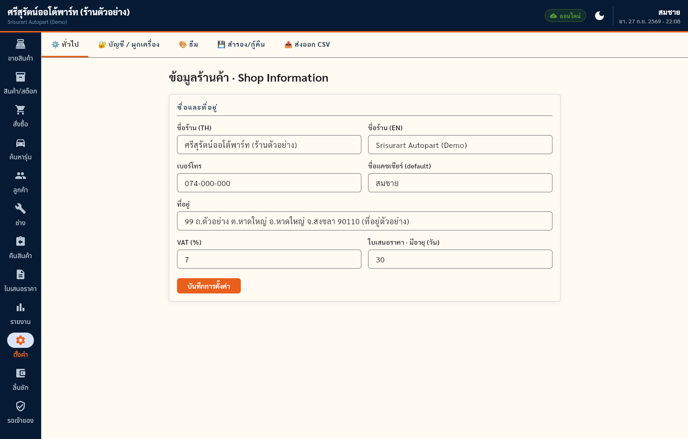
แท็บ ⚙ ทั่วไป — ข้อมูลร้านค้า · Shop Information
- แท็บ ⚙ ทั่วไปชื่อร้าน (TH/EN) เบอร์ ชื่อแคชเชียร์ ที่อยู่ VAT (%) ใบเสนอราคา · มีอายุ (วัน) (ใช้กับใบเสนอราคาที่ออกหลังบันทึก — ภาค 01 หัวข้อ 5)
- กด บันทึกการตั้งค่า✓ บันทึกแล้ว (ปุ่มกดได้เฉพาะตอนออนไลน์)
ค่าตั้งร้านอยู่ที่เซิร์ฟเวอร์ (API build)ปุ่ม บันทึกการตั้งค่า ส่งค่าขึ้นเซิร์ฟเวอร์ (PATCH /settings) — ตอนออฟไลน์ถูกปฏิเสธด้วย ระบบอยู่ในสถานะออฟไลน์ ไม่สามารถบันทึกการตั้งค่าได้ ไม่มีการเก็บไว้ส่งทีหลัง · ทุกเครื่องดึงค่าตั้งล่าสุดจากเซิร์ฟเวอร์เองทุกครั้งที่เข้าสู่ระบบ (#460) — ชื่อร้านที่ทีมแพลตฟอร์มตั้งตอนสร้างร้านจึงขึ้นบนหัวจอและใบเสร็จตั้งแต่เข้าสู่ระบบครั้งแรก · เครื่องที่เปิดค้างไว้จะเห็นค่าที่แก้จากเครื่องอื่นเมื่อเข้าสู่ระบบใหม่หรือรีโหลดหน้าเว็บ — **หรือไม่ต้องรอด้วยซ้ำ**: ตั้งแต่ 2026-09-28 (#474) เครื่องที่เพิ่งกลับมามีเน็ตก็ดึงค่าตั้งใหม่ทันทีตอนซิงค์ ไม่ต้องออกจากระบบ/เข้าใหม่หรือรีโหลดหน้า
ธีมและขนาดตัวอักษร Theme & font size
- แท็บ 🎨 ธีม → การ์ด 🌙 Dark Mode หรือ ☀️ Light Mode (อันที่ใช้อยู่มี ✓ ใช้งานอยู่) · ไอคอนพระจันทร์บนแถบบนสุดสลับธีมได้ทุกหน้า
- ส่วน ขนาดตัวอักษร · Font Size — เลือก เล็ก 0.85x / ปกติ 1x / ใหญ่ 1.1x / ใหญ่มาก 1.2x / ใหญ่พิเศษ 1.25x หรือเลื่อนแถบ ดูผลในกล่องตัวอย่างด้านล่าง
- ค่าทั้งสองจำไว้ในเบราว์เซอร์เครื่องนี้ ไม่ต้องออนไลน์ และไม่มีผลกับเครื่องอื่น
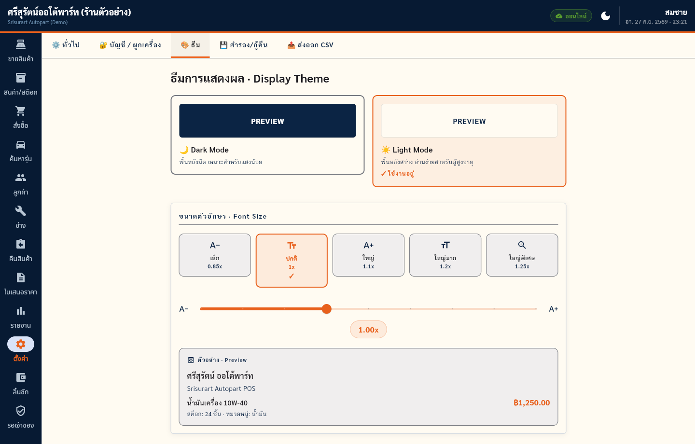
แท็บ 🎨 ธีม — ธีมมืด/สว่าง และขนาดตัวอักษร
ออกจากระบบ: แท็บ 🔐 บัญชี / ผูกเครื่อง → ออกจากระบบ — เครื่องยังผูกอยู่และ PIN ออฟไลน์ยังอยู่ (ต่างจาก ยกเลิกการผูกเครื่อง ในหัวข้อ 2) · ตะกร้าและใบเสนอราคาที่ค้างในตะกร้าถูกล้าง รายการรอส่งไม่หาย คนถัดไปเข้าสู่ระบบแล้วไปหน้า ขายสินค้า
เครื่องเดียวใช้หลายร้าน (API build)ข้อมูลในเครื่องผูกกับร้านที่เข้าสู่ระบบ — เข้าด้วยบัญชีอีกร้าน ระบบล้างข้อมูลร้านเดิมในเครื่องแล้วดึงของร้านใหม่ทั้งหมด (ร้านใหม่ไม่เห็นสินค้า/ลูกค้า/ค่าตั้งของร้านเดิม) · ถ้ายังมีรายการค้างส่ง ชำระเครดิตค้างส่ง หรือบิลพัก ระบบปฏิเสธ: เครื่องนี้ยังมีงานของร้านเดิมค้างอยู่ … จึงจะเข้าสู่ระบบร้านอื่นได้ — กะที่ยังเปิดอยู่ไม่ขวาง
สำรองข้อมูล Backup
- แท็บ 💾 สำรอง/กู้คืน → 💾 สำรองข้อมูลดูจำนวนระเบียน 14 ประเภท
- กด ⬇ ดาวน์โหลดไฟล์ backup (.json)ดาวน์โหลดไฟล์ backup สำเร็จ — เก็บไฟล์ไว้นอกเครื่อง
กู้คืน Restore
- 📥 กู้คืนข้อมูล → คลิกเพื่อเลือกไฟล์ backup (การ์ดไอคอน 📁)เวอร์ชันนี้ยังเลือกไฟล์ไม่ได้ — ให้ วางเนื้อหาไฟล์ .json ลงช่อง แล้วกด ตรวจสอบไฟล์
- ตรวจชื่อร้านและวันที่สำรองในการ์ด ข้อมูลในไฟล์ที่เลือก
- กด ✓ ยืนยันนำเข้าข้อมูลสำเร็จ — กำลังโหลดหน้าใหม่…
การกู้คืนแทนที่ทั้งหมด⚠️ การกู้คืนจะแทนที่ข้อมูลทั้งหมด — ตรวจสอบไฟล์ให้ถูกต้องก่อนกด "กู้คืน"
ส่งออก CSV Export
แท็บ 📤 ส่งออก CSV → เลือกช่วงวัน → ⬇ ดาวน์โหลด ที่ 📋 ยอดขายรายบิล / 📦 รายการสินค้าที่ขาย / 🗂 สต็อกปัจจุบัน — เปิดใน Excel ภาษาไทยได้
ข้อจำกัดปัจจุบัน Current limitations
- สำรอง/กู้คืนในหน้านี้ทำกับ ฐานข้อมูลในเครื่องนี้ — เหมาะกับ Drift build · ใน API build ข้อมูลจริงอยู่บนเซิร์ฟเวอร์ และการกู้คืนในหน้านี้ ไม่ได้เขียนกลับขึ้นเซิร์ฟเวอร์ · เซิร์ฟเวอร์มีงานส่งออกข้อมูลร้าน (
POST /backup/export) แต่แอปยังไม่มีปุ่มเรียก
- การสำรองข้อมูลฝั่งเซิร์ฟเวอร์ยังไม่ออกนอก VM (ภาค 04)
Srisurart POS · ภาค 029 · รอเจ้าของ
Section 9
หน้า รอเจ้าของ Owner review (API build)
เมนู รอเจ้าของ (มีตัวเลขแดงเมื่อมีงาน) — หัวข้อ รายการรอเจ้าของ มี 2 แท็บ: ถูกปฏิเสธ / ค้าง และ รอตรวจ
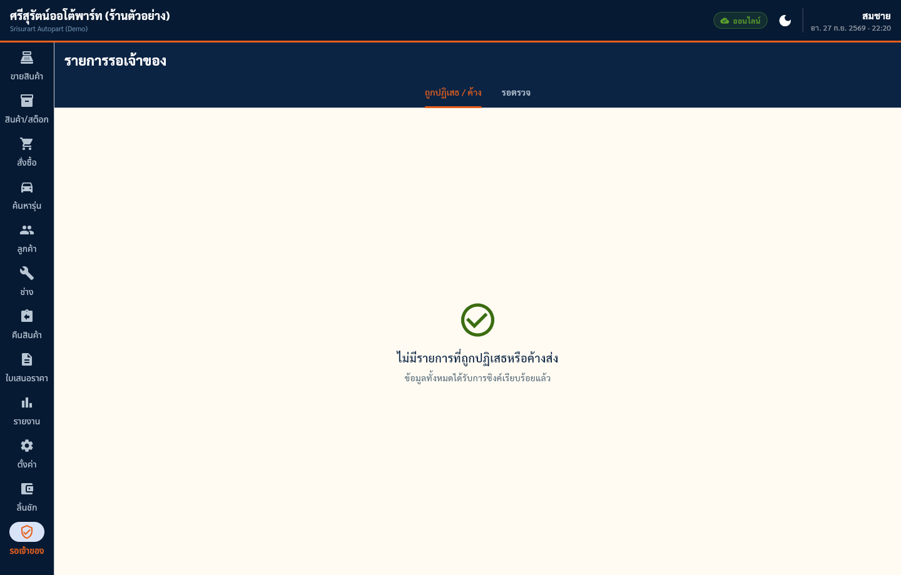
รายการรอเจ้าของ
แท็บ ถูกปฏิเสธ / ค้าง Rejected / stuck
รายการที่เครื่องส่งขึ้นเซิร์ฟเวอร์ไม่ผ่าน เช่น ขายสินค้า เปิดกะ เงินเข้า/ออกลิ้นชัก เพิ่มลูกค้า ชำระหนี้ช่าง — ป้าย ถูกปฏิเสธ (แดง) หรือ ค้างส่ง (เหลือง)
- อ่านรหัส/ข้อความผิดพลาด และ ดูข้อมูล payloadเพื่อรู้ว่าเป็นบิลไหน ยอดเท่าไร
- ถ้าแก้สาเหตุได้แล้ว (เช่น เน็ตกลับ เติมสต็อกแล้ว) กด ส่งใหม่ส่งซ้ำด้วยคีย์เดิม ไม่เกิดบิลซ้ำ
- ถ้าต้องทิ้ง กด ทิ้ง → ใส่ หมายเหตุการทิ้งรายการ * (บังคับ)ทิ้งรายการแล้ว (เซิร์ฟเวอร์มีข้อมูลนี้อยู่ จะดึงข้อมูลล่าสุดในการซิงค์) หรือ ทิ้งรายการและลบข้อมูลในเครื่องเรียบร้อยแล้ว
ตั้งแต่ 2026-09-28 (#473) ถ้าเซิร์ฟเวอร์ยังไม่มีข้อมูลนี้ (ทิ้งแล้วลบข้อมูลในเครื่อง) ระบบจะคืนสต็อกสินค้า คะแนน/ยอดสะสมลูกค้า และยอดช่างกลับให้อัตโนมัติ ไม่ต้องจัดการเองอีกแล้ว — แต่ถ้าบิลนั้นมีใบลดหนี้หรือถูกยกเลิกในเครื่องไปแล้ว ระบบจะปฏิเสธการทิ้งพร้อมข้อความ บิลนี้มีการคืนสินค้าหรือยกเลิกในเครื่องแล้ว ไม่สามารถทิ้งได้ — กรณีนี้ให้กด ส่งใหม่ แทน (ยังไม่มีปุ่มจัดการบิลแม่ + รายการที่ผูกกันพร้อมกัน)
ค้างส่ง กับ ถูกปฏิเสธ ต่างกันอย่างไร · ควรกดอะไร
| ป้าย | เกิดจาก | ทำอย่างไร |
|---|
| ค้างส่ง | ส่งแล้ว 3 ครั้งยังไม่ได้คำตอบที่ชัดเจนจากเซิร์ฟเวอร์ (เน็ตหลุดกลางทาง เซิร์ฟเวอร์ล่ม/ตอบช้า) — เซิร์ฟเวอร์ อาจ บันทึกไปแล้วหรือยังก็ได้ | รอให้ป้ายมุมบนเป็น ออนไลน์ แล้วกด ส่งใหม่ — ปลอดภัยเสมอ เพราะส่งด้วยคีย์เดิม ถ้าเซิร์ฟเวอร์มีแล้วจะได้ผลเดิมกลับมา ไม่เกิดบิลซ้ำ |
| ถูกปฏิเสธ | เซิร์ฟเวอร์ตรวจแล้ว ไม่รับ (เช่น สต็อกบนเซิร์ฟเวอร์ไม่พอ ช่างถูกลบไปแล้ว ข้อมูลขัดกับรายการอื่น) — อ่านรหัสและข้อความบนการ์ด | ถ้าแก้ต้นเหตุได้ (เติมสต็อก เพิ่มข้อมูลที่ขาด) → ส่งใหม่ · ถ้าแก้ไม่ได้หรือข้อมูลผิดจริง → ทิ้ง พร้อมหมายเหตุ แล้วทำรายการที่ถูกต้องใหม่ด้วยมือ (เช่น ขายใหม่ตอนออนไลน์) |
- รายการที่ติดอยู่ขวางรายการที่ตามมา — รายการถัดไปที่อ้างถึงสิ่งเดียวกัน (เช่น บิลเดียวกัน กะเดียวกัน) จะไม่ถูกส่งจนกว่าตัวที่ติดจะส่งผ่านหรือถูกทิ้ง ส่วนรายการอื่นที่ไม่เกี่ยวกันยังส่งได้ตามปกติ
- ตราบใดที่แท็บนี้ยังมีรายการ ปิดกะไม่ได้ (ภาค 01 หัวข้อ 7) — ต้องเคลียร์ก่อนปิดกะทุกครั้ง
- ทิ้งรายการทำได้เฉพาะตอนออนไลน์
แท็บ รอตรวจ To review
เหตุการณ์ที่ระบบยอมให้ผ่าน แต่อยากให้เจ้าของรู้ อ่านแล้วกด ตรวจแล้ว (บันทึกการตรวจสอบเรียบร้อยแล้ว)
| ป้าย | เกิดเมื่อ |
|---|
| ยกเลิกบิลออฟไลน์ | ยกเลิกบิลตอนออฟไลน์ |
| วงเงินเกิน (อนุมัติพิเศษ) | ขายเครดิตเกินวงเงินตอนออฟไลน์ |
| กะไม่ได้นับเงินสด | กะถูกเก็บเข้าประวัติโดยไม่ได้ปิด/นับเงิน |
| วันที่ถูกปรับ (clamp) | วันที่ของรายการออฟไลน์ผิดปกติ เซิร์ฟเวอร์ปรับให้ |
| ปลดเครื่องที่ค้างส่ง | บังคับปลดเครื่องที่ยังมีรายการค้าง |
| เลขเอกสารออฟไลน์ไม่ตรงกับระบบ | เลขใบเสร็จ/ใบลดหนี้ที่ออกตอนออฟไลน์ถูกเปลี่ยนเลข |
Srisurart POS · ภาค 0210 · สิ้นวัน
Section 10
SOP สิ้นวันของเจ้าของร้าน End of day
- ดูป้ายสถานะ — ต้องเป็น ออนไลน์ และไม่มีตัวเลขค้างถ้ามี รอตรวจสอบ ({N}) เข้าหน้า รอเจ้าของ ก่อน
- หน้า รอเจ้าของ: แท็บ ถูกปฏิเสธ / ค้าง ต้องว่างไม่มีรายการที่ถูกปฏิเสธหรือค้างส่ง
- ให้พนักงานปิดกะ (ภาค 01 หัวข้อ 7)ตรวจ ผลต่าง ถ้าขาด/เกินให้หาสาเหตุวันนั้น
- พิมพ์ 📊 สรุปยอดปิดร้าน แล้วเซ็นชื่อ
- แท็บ รอตรวจ: อ่านและกด ตรวจแล้ว ทุกรายการ
- ดูหน้าต่างแจ้งเตือนสต็อก / รายงานสต็อกต่ำ → สร้างใบสั่งซื้อพรุ่งนี้
- Drift build: ดาวน์โหลดไฟล์ backup (.json) เก็บนอกเครื่องข้อมูลร้านอยู่ในเครื่องนี้เครื่องเดียว
ข้อจำกัดปัจจุบัน Current limitations
- ร้านจริงยังใช้ Drift build — หัวข้อ 1–3 และ 9 ใช้กับ API build เท่านั้น
- สิทธิ์ POS/Backoffice บังคับที่เซิร์ฟเวอร์ หน้าจอส่วนใหญ่ไม่ได้ซ่อนปุ่ม — กดบนเครื่อง Backoffice แล้วเซิร์ฟเวอร์จะปฏิเสธ
- รหัสผูกเครื่องที่ออกจากแอปมีอายุ 15 นาที แต่รหัสผูกเครื่องแรกที่ทีมแพลตฟอร์มออกให้ตอนเปิดร้านมีอายุ 7 วัน
- ข้อความในหน้า รอเจ้าของ (ถูกปฏิเสธ / ค้าง / รอตรวจ) ต่างเล็กน้อยจากถ้อยคำที่รับรองไว้ในสเปก (รายการติดปัญหา / ค้างส่ง / รายการรอตรวจสอบ) — คู่มือนี้ใช้คำที่อยู่บนจอจริง